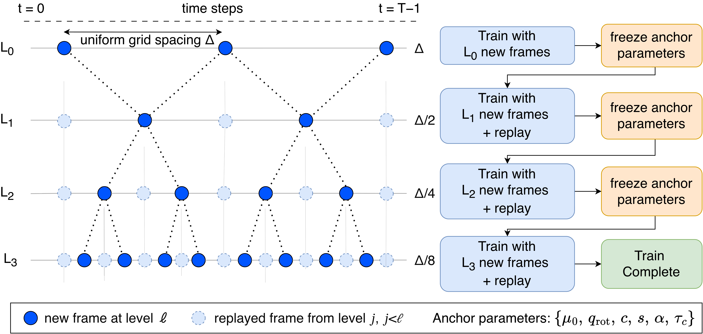
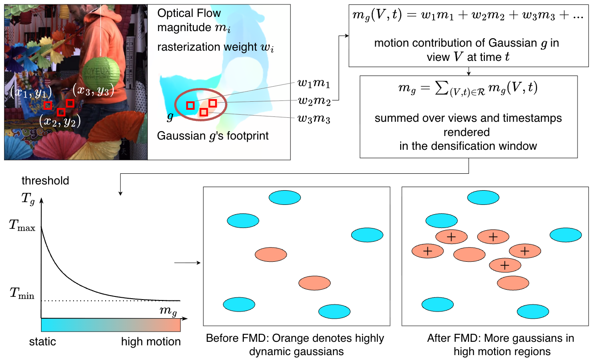

Existing dynamic Gaussian splatting methods lose detail in moving regions as sequences get longer; our approach preserves that detail across long videos.
Existing dynamic 3D Gaussian splatting methods achieve high-quality reconstruction on short sequences, but their performance degrades on longer videos, particularly in fast-moving regions. We observe that, as motion becomes more complex over longer sequences, Gaussians naturally develop shorter temporal spans to specialize to different segments of motion. However, temporal spans in dynamic regions often collapse before sufficient gradients can accumulate to trigger effective densification, causing these regions to become underrepresented and resulting in blur artifacts.
To address these challenges, we introduce two complementary components. First, we stabilize optimization with a hierarchical temporal sampling strategy that begins with sparse frame subsets and progressively increases temporal resolution. Second, we introduce a flow-modulated densification scheme that leverages optical flow to identify dynamic regions and selectively applies aggressive densification. Together, these components significantly improve reconstruction quality and make dynamic 3D Gaussian splatting more reliable on long video sequences.

